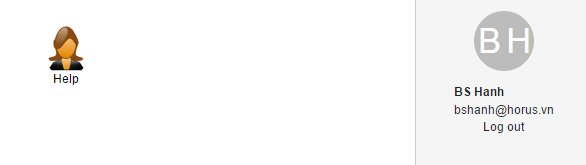
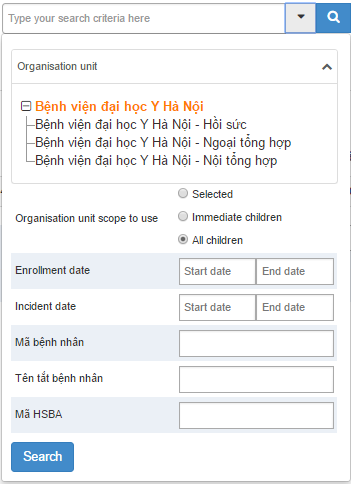
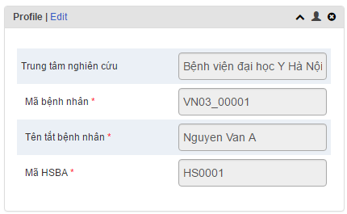
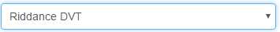
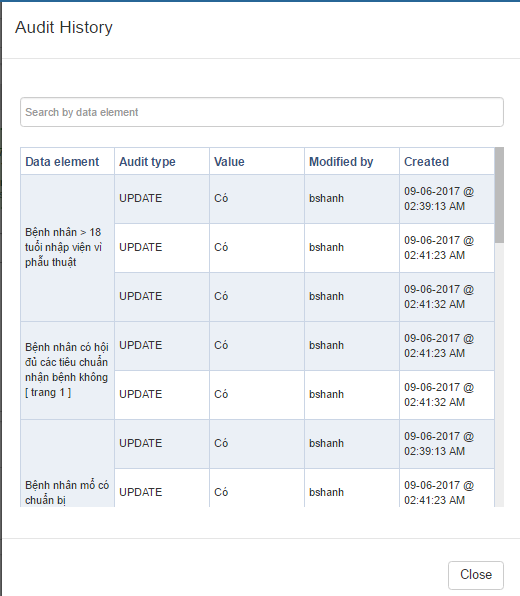
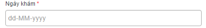
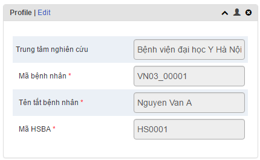

Hướng dẫn sử dụng website Riddance DVT
Xin Chào
Nội dung trang này là để hướng dẫn chi tiết về cách sử dụng Riddance DVT để nhập liệu. Giải thích về các buttons, links, stage, section... được hiển thị trên website.
Vui lòng click vào từng link ở menu bên trái để đi tới hướng dẫn từng phần hoặc scroll down chuột xuống cuối trang.
Sử dụng Dashboard
Nội dung chi tiết. Menu gồm các thành phần sau:
-
Để tìm kiếm các ứng dụng trong chương trình, bạn nhập tên chương trình đó:
Hoặc bạn có thể click vào nút "app" trên thanh menu để hiển thị tất cả ứng dụng/chức năng hiện có như:
- Click vào biểu tượng "profile" trên thanh menu để sử dụng các chức năng sẵn có cho user đang đăng nhập như:

Danh sách bệnh nhân
Nội dung chi tiết:
- Chọn chương trình nghiên cứu.
- Để tìm nhanh tên một nghiên cứu viên hay tên bệnh nhân, chỉ cần click vào hoặc nhập tên vào khung nhập dữ liệu để tìm kiếm.
 - Để xem toàn bộ danh sách bệnh nhân đang tham gia nghiên cứu thì ấn vào nút trên màn hình để hiển thị toàn bộ danh sách như dưới:
Trong đó:
- : Với textbox này, được mặc định là 50 dòng trên một trang, nếu bạn muốn chỉnh số lượng dòng trên một trang thì nhập một con số khác.
- : Với số lượng bệnh nhân lớn, sẽ có sự phân trang, nếu muốn đi tới trang nào thì chỉ cần nhập số trang đó vào rồi enter thì sẽ tới trang đó.
- Trong bảng danh sách bệnh nhân sẽ hiển thị các cột với các thông tin của bệnh nhân tham gia nghiên cứu như : đơn vị đăng kí, ngày đăng kí, tên nghiên cứu viên, tên và mã bệnh nhân, các stages trong nghiên cứu.
Nếu bệnh nhân đã hoàn thành stages nào đó thì trên bảng danh sách sẽ hiển thị , còn nếu chưa hoàn thành thì sẽ hiển thị . - Icon : Khi click vào đây, có thể chọn hiển thị hoặc ẩn các cột trong bảng danh sách bệnh nhân.
- Icon : Khi click vào icon này, bạn có thể download file xuống với lựa chọn định dạng khác nhau như: XML, JSON, CSV
- Icon : Khi click vào icon này, bảng danh sách chỉ hiển thị những bệnh nhân có sự kiện trong ngày hôm đó
- Icon : Với icon này, danh sách sẽ được hiển thị đầy đủ tất cả bệnh nhân đăng kí tham gia nghiên cứu
- Icon : Khi click vào icon này, danh sách chỉ hiển thị những bệnh nhân có hoạt động....
- Icon : Với icon này, danh sách sẽ hiển thị tất cả bệnh nhân đã hoàn thành nghiên cứu.
- Icon : Với icon này, danh sách sẽ chỉ hiển thị những bệnh nhân đã xóa ra khỏi nghiên cứu.
- Nếu có bệnh nhân mới tham gia vào nghiên cứu, click vào nút để tạo một đăng kí mới. Khi click vào button này một form đăng kí sẽ hiển thị như sau:

Trong đó:
- : Sau khi điền đầy đủ thông tin để đăng kí, nhấn vào nút này, tự động lưu lại và tiếp tục đi vào trong phần nghiên cứu để thực hiện.
- : Lưu thông tin đã đăng kí và quay lại form đăng kí cho bệnh nhân mới.
- : Click vào button này, sẽ print ra file đăng kí tham gia nghiên cứu.
- : Hủy bỏ đăng kí form tham gia nghiên cứu.
Hướng dẫn phần chi tiết bệnh nhân
Heading


- Button : Click vào nút button này thì bệnh nhân sẽ quay trở lại trang "Danh sách bệnh nhân".
- Button : Click vào nút button này thì sẽ quay lại bệnh nhân đứng trước bệnh nhân hiện tại
- Button : Click vào nút button này thì sẽ đi tiếp tới bệnh nhân đứng sau bệnh nhân hiện tại
- ComboList : Click vào đây, hiển thị danh sách các chương trình hiện có, chọn hoặc nhập tìm chương trình cần làm.
- Button : Click vào nút này, sẽ ghim bệnh nhân hiện tại đang làm...
- Button : Click chọn "Deactivate Bệnh nhân" là thao tác hủy bỏ bệnh nhân hiện tại đang làm; còn click chọn "Delete Bệnh nhân" là xóa bệnh nhân ra khỏi danh sách bệnh nhân thuộc chương trình đang chọn.
- Button : Khi click vào button này, sẽ hiển thị ra 2 mục, nếu Click chọn "Show/hide widgets" là thao tác hiển thị hoặc ẩn widgets; Click chọn "Save dashboard layout as default" là thao tác lưu bố cục dashboard làm mặc định.
Trong đó:
- Icon : Click vào icon này thì nội dung sẽ được thu gọn hoặc hiển thị chi tiết.
- Icon : Không hiển thị section này trên trang, nếu muốn hiển thị phần này ra thì vào Button để hiện thị ra
- Textboxt : Bổ sung sau
- Textboxt : Bổ sung sau
- Textboxt : Bổ sung sau
- Button : Bổ sung sau
- Button : Bổ sung sau
- Button : Bổ sung sau
- Button : Bổ sung sau
Trong đó:
- Icon : Click vào icon này thì nội dung sẽ được thu gọn hoặc hiển thị chi tiết.
- Icon : Không hiển thị section này trên trang, nếu muốn hiển thị phần này ra thì vào Button để hiện thị ra
Trong đó:
- Icon : Click vào icon này, bảng hướng dẫn màu sắc sẽ hiển thị trong các stage và section.
- Icon : Click vào icon này, hiển thị ra bảng các data elements đã làm như bên dưới:
Với:
- Nhập tìm data elements muốn xem đã làm hay chưa.
- Đóng phần Audit History lại:
- Nhập tìm data elements muốn xem đã làm hay chưa.
- Icon : Click vào icon này thì nội dung sẽ được thu gọn hoặc hiển thị chi tiết.
- Icon : Không hiển thị section này trên trang, nếu muốn hiển thị phần này ra thì vào Button để hiện thị ra
- Có 4 stages chính: Các stages chưa làm nhưng đã có ngày report date sẽ hiển thị màu hồng nhạt, với stage nào đã hoàn thành thì màu của stage đó sẽ hiển thị màu xanh lạt, còn stage chưa chọn ngày report date được hiển thị màu xanh với chữ hiển thị là "scheduled"
- Đối với mỗi stage sẽ có một ngày report date khác nhau, ví dụ:
 - Với các section có số lượng data elements nhiều thì sẽ có phân trang và mặc định 1 trang là 20 data elements, nếu muốn thay đổi số lượng data elements trên 1 trang thì nhập một con số khác vào.
: -
Click chọn section để nhập thông tin cho các data elements:
Trong section với những data elements phải nhập liệu thì sau khi nhập liệu xong, ấn phím "tab" trên bàn phím để lưu lại thông tin đã nhập, ô nhập liệu sẽ chuyển sang màu xanh như ví dụ bên dưới:
- Sau khi nhấn nút để hoàn thành section đang làm sẽ có một form comfirm cho việc hoàn thành section đó:
- Với các section đã hoàn thành mà cần chỉnh sửa lại thông tin đã nhập thì nhấn nút để edit lại. Khi đó sẽ xuất hiện một form comfirm lại như sau:
Nếu muốn tiếp tục edit thì nhấn vào nút để tiếp tục hoặc nếu không muốn tiếp tục thì nhấn nút để hủy việc edit lại. - Với phần ghi chú:
- Nhập những ghi chú cần thiết.
- Sau khi nhập xong notes, click vào button này để add notes lại:
- Button : Bổ sung sau.
- Nhập những ghi chú cần thiết.
- Icon : Click vào icon này thì nội dung sẽ được thu gọn hoặc hiển thị chi tiết.
- Icon : Không hiển thị section này trên trang, nếu muốn hiển thị phần này ra thì vào Button để hiện thị ra

Trong đó:
- : Thay đổi thông tin: tên nghiên cứu viên, tên bệnh nhân, mã bệnh nhân.
- Icon : Click vào icon này thì nội dung sẽ được thu gọn hoặc hiển thị chi tiết.
- Icon : Không hiển thị section này trên trang, nếu muốn hiển thị phần này ra thì vào Button "setting" để hiện thi ra
- Icon : Click vào icon này, hiển thị ra bảng các data elements đã click
- Nhập tìm data elements muốn xem đã làm hay chưa.
- Đóng phần Audit History lại:
Trong đó:
- : Thêm mối quan hệ.
- Icon : Click vào icon này thì nội dung sẽ được thu gọn hoặc hiển thị chi tiết.
- Icon : Không hiển thị section này trên trang, nếu muốn hiển thị phần này ra thì vào Button để hiện thị ra
- Icon : Click vào icon này thì nội dung sẽ được thu gọn hoặc hiển thị chi tiết như bên dưới.

- Icon : Không hiển thị section này trên trang, nếu muốn hiển thị phần này ra thì vào Button để hiện thị ra
Trong đó:
- Icon : Click vào icon này thì nội dung sẽ được thu gọn hoặc hiển thị chi tiết.
- Icon : Không hiển thị section này trên trang, nếu muốn hiển thị phần này ra thì vào Button để hiện thị ra
- Nhập ghi chú cần thiết:
- Sau khi nhập xong notes, click vào button này để add notes lại:
- Button : Bổ sung sau.